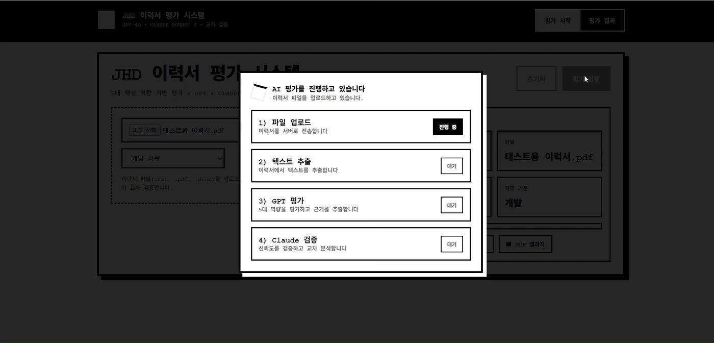
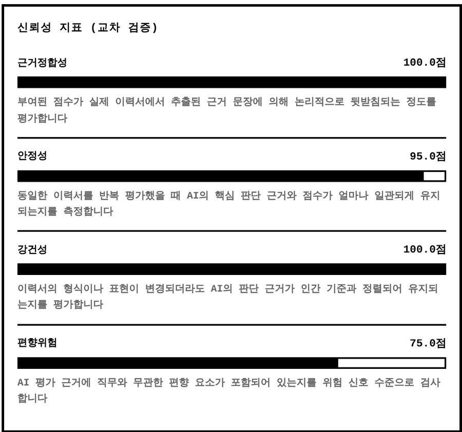

개요


문제
- AI 서류 평가는 빠르게 늘지만 왜 그 점수인지 설명하지 않는 블랙박스
- 형식만 바꾸거나 키워드를 반복해도 점수가 달라질 수 있음
- 점수와 함께 “이 점수를 믿어도 되는가”를 평가하는 시스템을 기획
주요 기능
txt · pdf · docx에서 텍스트 추출
점수마다 이력서 속 근거 문장 제시
근거정합성 · 안정성 · 강건성 · 편향위험
규칙 기반 점수와 Claude 채점의 일치도
결과 화면을 한글 PDF로 내려받기
변형 이력서로 점수 변동폭 측정
- 내 역할
- 기획 · 신뢰성 감사 프로토타입(1~3차) · Flask API 서버 · 에이전트 흐름 설계 · 발표 자료 제작
평가는 GPT로, 검증은 Claude로

기준별 20점 만점 13 · 14 · 14 · 18 · 17 (창의성 · 의사소통 · 전문지식 · 인성 · 열정), 항목마다 이력서 속 근거 문장
A급 (우수) 76.0점, 강점 인성 · 열정 / 보완점 창의성
종합 신뢰도 92.5 · Claude 교차검증 일치도 70%
이력서 한 건이 처리되는 과정

역할을 나눈 이유
- 평가와 설명 분리: 점수 매기기와 근거 정리를 나눠 점수마다 이력서 문장을 붙임
- 다른 모델이 검증: GPT가 스스로를 검증하지 않도록 Claude가 이력서 없이 평가 결과만 받아 4지표를 다시 채점(일치도에만 쓰이고 종합 신뢰도에는 안 들어감)
- 호출 횟수: 이력서 한 건에 GPT 6번(채점 5 + 종합 1), Claude 1번
서버와 평가 엔진을 나눈 구조
파일 처리와 응답만 맡고, 평가 로직은 엔진 파일 하나에 모음
평가 → 설명 → 검증 결과를 하나로 묶어 서버에 돌려줌
API 키와 모델 이름은 환경 변수에서 읽음
최종 버전 Flask · GPT-4o · Claude
flask_api_server.pyAPI 서버: 상태 확인 · 이력서 평가 · PDF 리포트 직접
resume_evaluation…평가 엔진
index.html업로드 · 진행 단계 · 결과 화면 · Total Trust 계산
이전 버전 혼자 만든 프로토타입
page.py1차 · 신뢰성 감사 (Streamlit)
page_v2.py2차 · 기업 전용 감사 + PDF (ReportLab)
server.py3차 · API 서버 분리 (FastAPI)
home.html3차 · 웹 화면 초안, 최종 화면의 원형
내 작업
점수 대신 점수의 변동폭으로 신뢰성 판정1차 · Streamlit
감사 흐름
왜 변동폭인가
- 점수 하나만 봐서는 그 점수가 우연인지, 형식 때문인지 알 수 없음
- 같은 내용, 다른 입력: 뜻은 그대로 두고 형식 · 키워드 · 반복 횟수만 바꾼 케이스를 자동 생성
- 변동폭이 곧 신뢰성: 믿을 만한 평가라면 케이스들의 점수가 거의 같아야 함
판정 기준값
| 지표 | 주의 | 위험 |
|---|---|---|
| 평가 일관성 σ | 4점 이상 | 6점 이상 |
| 형식 민감성 Δ | 12점 이상 | 20점 이상 |
| 키워드 상승폭 | +8점 이상 | +12점 이상 |
예: 형식 Δ가 20 이상 → “포맷에 따라 평가가 흔들릴 가능성이 있습니다”
네 단계 버전
버전마다 바꾼 이유
- 1 → 2차: 기업이 쓰는 감사 도구가 되도록 직무 기준을 고정하고 결과를 PDF로 남김
- 2 → 3차: 화면과 처리 로직을 나눠 웹에서 쓰도록 API 서버로 분리
- 3 → 최종: GPT 평가 + Claude 검증 구조를 얹고, 서버는 Flask로 정리
3차 규칙 기반 채점
2차 직무별 가중치
| 직무 | 직무 적합성 | 근거성 | 명확성 |
|---|---|---|---|
| 인사(HR) | 40% | 40% | 20% |
| 마케팅 | 45% | 45% | 10% |
| 개발 | 45% | 40% | 15% |
이력서 하나를 올리면 세 직무를 자동으로 감사하고 ReportLab으로 PDF 리포트 생성
Flask API 서버Flask · PyPDF2 · python-docx · ReportLab
| 주소 | 방식 | 하는 일 |
|---|---|---|
/health | GET | 서버가 살아 있는지 확인 (화면이 시작할 때 호출) |
/api/review | POST | 이력서 파일을 받아 평가 결과 JSON으로 응답 |
/api/report/pdf | POST | 화면 결과를 받아 A4 PDF 리포트 파일로 응답 |
파일을 안전하게 받기
텍스트 추출과 실패 처리
| 형식 | 추출 방법 | 실패하면 |
|---|---|---|
| txt | UTF-8 → CP949 → latin-1 순서로 시도 | 앞 인코딩으로 못 읽으면 다음 인코딩으로 |
| PyPDF2로 페이지마다 글자 추출 | 빈 PDF · 이미지 PDF 안내 | |
| docx | python-docx로 문단 이어 붙임 | 글자가 없으면 안내 |
추출 결과가 10자 미만이면 평가하지 않음
PDF 리포트 만들기
Total Trust 계산 오류 수정2026.10 고도화


원인
계산 과정
| 단계 | 수정 전 | 수정 후 |
|---|---|---|
| 가중합 | 0.34·100 + 0.33·95 + 0.33·100 = 98.35 | |
| BRS로 쓰인 값 | 75 (안전 점수) | 100 − 75 = 25 (위험도) |
| × (1 − BRS) | 98.35 × 0.25 = 24.6 | 98.35 × 0.75 = 73.8 |
해결과 확인
- 수정: 화면 공식에 넣기 전에 100 − 값으로 위험도로 되돌림
- 확인: 시연 영상의 실제 값을 고친 화면에 넣어 24.6 → 73.8로 바뀌는 것을 재현
같은 화면에 보이는 두 신뢰 점수
| 점수 | 계산 |
|---|---|
| 종합 신뢰도 92.5 | 신뢰도 4지표의 평균 (서버 계산) |
| 최종 신뢰 점수 73.8 (2026.10 고도화 후) | 근거정합성 · 안정성 · 강건성 가중 합 × (1 − 편향 위험) (화면 계산) |
시스템 전체
평가 에이전트
기준 하나를 채점하는 방식
JHD 회사의 인사 담당자로서 이력서를 평가하는 전문가
예: 창의성 = 문제 해결의 독창성, 새로운 아이디어 제시 능력
예: 혁신 · 개선 · 제안 · 아이디어 · 특허 …
서버가 파일에서 추출한 텍스트 그대로
설정과 그 이유
JHD 5대 평가 기준 가상 기업 · 회사마다 변경 가능
| 항목 | 기준 설명 | 키워드 (일부) |
|---|---|---|
| 창의성 | 문제 해결의 독창성, 새로운 아이디어 제시 | 혁신 · 개선 · 제안 · 특허 |
| 의사소통 | 협업 능력, 발표/보고 경험, 대인관계 | 협업 · 팀 · 발표 · 조율 |
| 전문지식 | 직무 관련 전문 기술, 자격증, 학력 | 자격증 · 기술 · 프로젝트 |
| 인성 | 성실성, 책임감, 윤리의식, 긍정적 태도 | 성실 · 책임 · 정직 · 배려 |
| 열정 | 직무에 대한 관심과 열의, 자기계발 | 학습 · 성장 · 도전 · 목표 |
기준 이름 · 설명 · 키워드만 바꾸면 다른 회사의 인재상으로 같은 구조로 평가
설명 에이전트와 등급
| 항목 | 점수 | 이력서에서 찾은 근거 |
|---|---|---|
| 창의성 | 13 / 20 | 기술을 ‘잘 만드는 것’보다 올바르게 사용하는 것의 중요성을 배우게 되었습니다. |
| 의사소통 | 14 / 20 | 프로젝트를 수행할 때에는 속도보다 일관성과 검증 가능성을 중시합니다. 기준이 모호한 상태에서 성급하게 결과를 내기보다는, 초기 정의와 전제를 정리한 뒤 단계적으로 진행합니다. 그 결과 팀 내에서는 분석 기준을 정리하고 문서화하는 역할을 자연스럽게 맡아 왔으며, 이후 작업 과정에서 발생할 수 있는 혼선을 줄이는 데 기여했습니다. |
코드로 정한 것과 GPT에 맡긴 것
등급 기준 (20점 만점 평균)
서버에서 화면용으로 바꾸는 것
LLM Judge와 교차검증
| 지표 | 설계 의도 | 현재 코드의 계산 |
|---|---|---|
| 근거정합성 | 점수가 이력서 근거로 뒷받침되는 비율 | 기준별 점수 구간과 근거 문장 개수가 맞으면 1, 아니면 0.5 → 평균 |
| 안정성 | 같은 입력 · 변형 입력에서 결과가 일관적인가 | 5개 점수의 표준편차 → 95 / 80 / 65 / 50 |
| 강건성 | 표현이 바뀌어도 판단이 사람 기준과 맞는가 | 근거가 있는 기준의 비율 + 근거 개수 보너스 |
| 편향위험 | 직무와 무관한 속성에 의존하는 정도 | 점수 최고−최저 차이로 위험도 → 100 − 위험도 |

점수를 합치는 방법
결과
시연 이력서 한 건은 A급 76.0점으로 평가되었습니다. 종합 신뢰도 92.5는 신뢰도 4지표의 평균이고, 최종 신뢰 점수 73.8(2026.10 고도화 후)은 가중 합에 편향 위험을 반영한 값입니다.

시연 이력서 한 건의 결과
내가 맡은 부분
- 1~3차 프로토타입: 신뢰성 감사 → 기업용 기준 · PDF → 서버 분리
- 최종 버전: Flask API 서버 · PDF 리포트
- 에이전트 흐름 설계: 평가 · 설명 에이전트 흐름
- 오류 수정: Total Trust 계산 방향